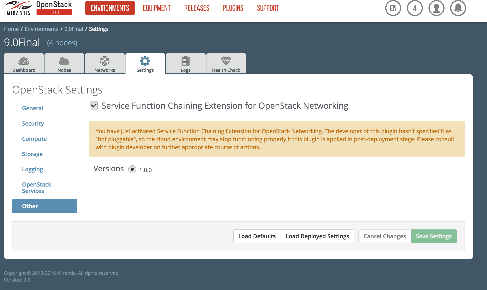
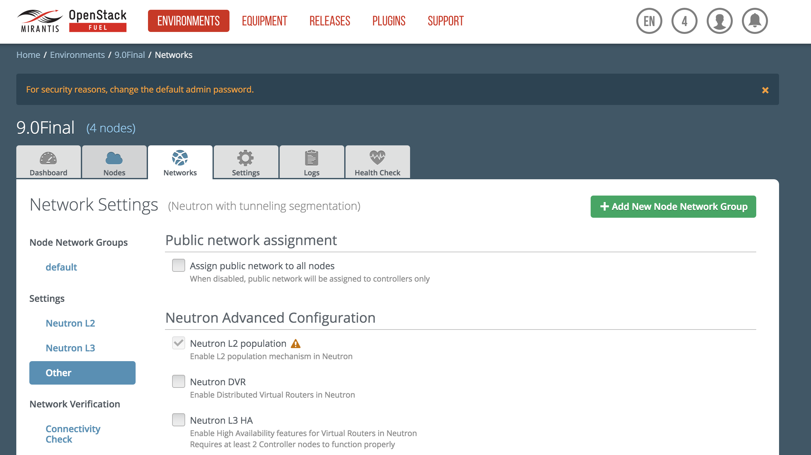
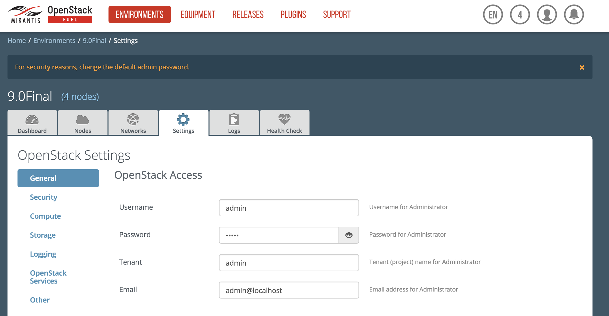
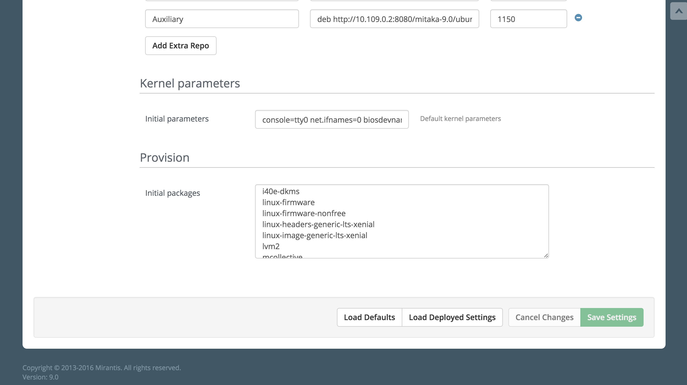

This document provides instructions for installing, configuring and using Networking SFC plugin for Fuel.
Contents
This plugin extends Mirantis OpenStack functionality by adding Networking SFC support. It installs all necessary packages and configures Neutron.
| Requirement | Version/Comment |
|---|---|
| Fuel | 9.0 |
To install Networking SFC plugin, follow these steps:
Install all needed dependencies:
# yum install createrepo rpm rpm-build dpkg-devel git ruby-devel createrepo dpkg-devel dpkg-dev rpm rpm-build python-pip # pip install fuel-plugin-builder # gem install fpm
Download plugin source code from github:
# git clone https://github.com/openstack/fuel-plugin-networking-sfc # cd fuel-plugin-networking-sfc
1.0 branch should be used on Fuel 9.0:
# git chekout 1.0
Build a plugin:
# fpb --build ./
Copy the plugin to already installed Fuel Master node; ssh can be used for that. If you do not have the Fuel Master node yet, see Quick Start Guide:
# scp networking-sfc-<version>.noarch.rpm root@<Fuel_Master_ip>:/tmp
Install the plugin:
# cd /tmp # fuel plugins --install networking-sfc-<version>.noarch.rpm
Check if the plugin was installed successfully:
# fuel plugins id | name | version | package_version | releases ---|----------------|---------|-----------------|-------------------- 1 | networking-sfc | 1.0.0 | 4.0.0 | ubuntu (mitaka-9.0)
Create an environment with vxlans support. For more information about environment creation, see Mirantis OpenStack User Guide.
In Environments tab choose an environment for which you want to install Networking SFC plugin.
Enable plugin by Service Function Chaining Extension for OpenStack Networking on Settings tab in section Other.
Enable L2 Population in Network tab in section Other.
Plugin reguire Xenial kernel. Because it is not in Fuel 9.0 by default it's should be installed by changing LTS kernel stack on Settings tab in section General. On the bootom is section Provision, in text box named Initial packages change packages from linux-headers-generic-lts-trusty and linux-image-generic-lts-trusty to linux-headers-generic-lts-xenial and linux-image-generic-lts-xenial.
 Adjust other environment settings to your requirements and deploy the environment. For more information, see Mirantis OpenStack User Guide.